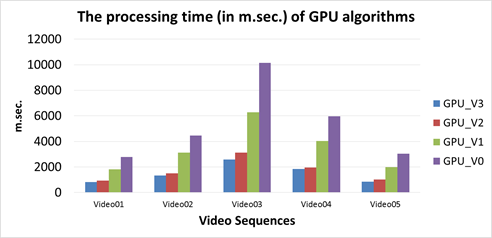
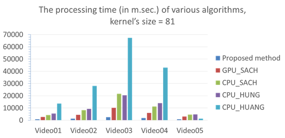
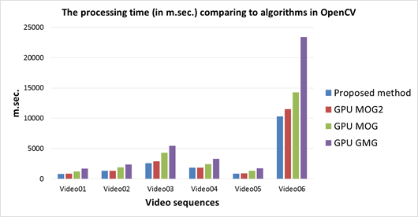
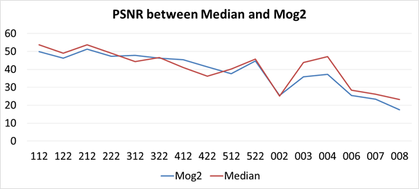

Master Thesis
Speed Up Temporal Median Filter and Its Application in Background Estimation
Abstract
Temporal median filter is well known for several fields, for examples, image processing and time series analysis. However, one of the limitation of this filter is the computation complexity. Several algorithms have been proposed recently to resolve this limitation. The proposed thesis¡¯s objectives is to speed-up the filter using GPU (Graphics Processing Unit). The speeded-up temporal median filter will be also analyzed for background modelling problem in video surveillance. Expected results of thesis are a new technique for speeding-up the temporal median filter using GPU is proposed and it is faster than recently developed algorithms, the effectiveness of the proposed temporal median filter is analyzed for the background modelling problem to show features on computation time and on the accuracy.
Results
Thesis contributions: (1) Build proposed method on GPU faster than previous histogram-based method (2) Propose data ordering technique (3) Propose find median value on difference histogram (4) Accelerate better than OpenCV algorthms such as MOG, GMG, MOG2 on GPU
From there, we can apply: Background subtraction with accuracy able to compare with OpenCV MOG2, Problems about time series data.
Case Study 1: Comparison among improvements
|
Index |
Name |
Description |
|
1 |
GPU_V0 |
No improvements |
|
2 |
GPU_V1 |
Plus improvements about data structure and code |
|
3 |
GPU_V2 |
Plus improvements about spatial locality by data ordering |
|
4 |
GPU_V3 |
Plus pre-processing data |

GPU_V3 is the best improvement of proposed method.
Case Study 2: The proposed method with the related algorithms
|
Index |
Name |
Description |
|
1 |
CPU_HUANG [7] |
Huang¡¯ et al. method on CPU |
|
2 |
CPU_HUNG [8] |
Hung¡¯ et al. method on CPU |
|
3 |
CPU_SACH [5] |
Sach¡¯ et al. method on CPU |
|
4 |
GPU_SACH |
Sach¡¯ et al. method on GPU |
|
5 |
Proposed method |
Proposed method on GPU |

Proposed method has improves Sach¡¯ et al. Algorithm on GPU.
Case Study 2: The proposed method with the related algorithms
|
Index |
Name |
Description |
|
1 |
Proposed method |
Proposed method on GPU |
|
3 |
GPU_GMG |
OpenCV GMG |
|
4 |
GPU_MOG |
OpenCV MOG |
|
5 |
GPU_MOG2 |
OpenCV MOG2 |

The proposed method runs fast than GMG, MOG, MOG2 (algorithms in OpenCV for Background Subtraction).
Case Study 3: The accuracy evaluation with OpenCV MOG2 (PSNR)

In some situations, proposed method is better OpenCV MOG2. In different situations, OpenCV MOG2 is better proposed method.